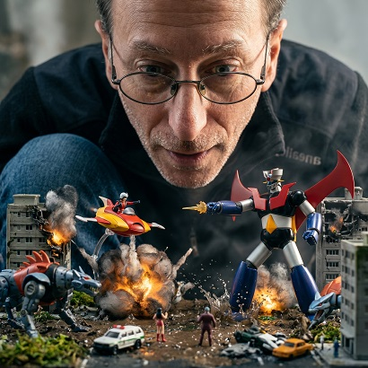

TU MAQUETA CON IA

¿Qué es?
Inserta al protagonista en una delicada maqueta artesanal en miniatura con enfoque macro tilt-shift, rodeado de pequeñas colinas esculpidas, arroyos de resina y casitas mágicas.
¿Cómo usarlo?
- Abre Google Flow con Nano Banana 2 en aspecto 16:9 o 1:1.
- Carga la foto de la persona en el panel Ingredients (+ Add Image).
- Asigna la etiqueta
Personaje 1para preservar su identidad reconocible a escala diminuta. - Pega la fórmula y genera este fascinante micromundo artesanal.
Cómo personalizar / Parámetros:
Especifica el estilo de la maqueta (pueblo alpino, fantasía de hadas, estación espacial en miniatura) en la descripción del escenario.
Prompt para copiar
Create an ultra cinematic macro fantasy portrait using the uploaded person’s face and identity faithfully preserved. The person appears as a giant realistic human crouching close to the ground, deeply focused and emotionally immersed while observing a tiny miniature scene from the movie/franchise: “SERIE/PELICULA/HITO”. Below the person, recreate an iconic miniature cinematic environment inspired by that universe, with tiny recognizable characters, creatures, vehicles, costumes, architecture, props and atmosphere from the movie. The miniature world must look physically real and handcrafted, integrated naturally into the environment like a living tiny world. The uploaded person must visually dominate the composition while the miniature movie scene happens beneath them in a realistic scale contrast. Expression on the person’s face should convey wonder, curiosity, emotional connection and cinematic immersion. Hyper realistic skin texture, cinematic lighting, shallow depth of field, volumetric fog, detailed moss, mud, water splashes, roots, miniature environmental storytelling, dramatic focus separation, movie-quality color grading. Shot on a professional cinema camera with macro lens. Ultra detailed. Photorealistic. Emotional cinematic atmosphere. Realistic scale interaction between giant human and tiny movie world. Vertical composition 9:16. Ultra realistic. High-end VFX look. IMPORTANT: Keep the uploaded person’s facial identity perfectly recognizable.